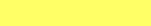
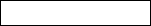
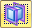
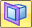

Extract surfaces command
Extracting surfaces is part of the Reverse Engineering Workflow.
Extract surfaces command
The Extract surfaces command assigns one of the recognized geometric surfaces to each contiguous mesh region based on the color defined for the region. Regions painted in white or any other non-identifiable color are not extracted. All extractable regions can be extracted at one time or each region can be extracted individually.
|
Geometric Construction Surface |
Region Color |
Example |
|---|---|---|
|
Planar |
yellow |
 |
|
Cylindrical |
cyan |
|
|
Conical |
blue |
|
|
Spherical |
red |
|
|
B spline/Freeform |
magenta |
|
|
Non Extractable |
white |
 |
The Extract command is not available until at least one region has been identified as an extractable surface. Regions are identified using the using the Automatic regions command or the Manual regions command.
The associated geometric surface for each extracted geographic region is listed in the Features collector of the PathFinder in the synchronous environment or simply as a surface in an ordered environment.
To return any one or all individual surfaces back to the colored geographic region, delete them from the PathFinder. This allows another type of geometry to be Fit to the colored geographic region.
The Extract command bar has the following options:
- Extract All

-
Attempts to extract a geometric surface based on the color assigned to each region for all sub-mesh regions. Regions painted in white or in an unrecognizable color are not extracted. The region colors are identified using the Automatic or Manual commands. Non-extractable regions can be assigned a geometric surface using the Fit command.
- Extract

-
Attempts to extract a single geometric surface based on the selected color region. The selected region turns green. The command does not become available until a region of a known color is selected. Regions identified by unrecognized colors or white cannot be extracted. Non-extractable regions can be assigned a geometric surface using the Fit command. The region colors are identified using the Automatic regions or Manual regions commands.
- Delete Surfaces
-
After one or more construction surfaces have been extracted, this lists extracted surfaces that can be deleted. To delete an extracted surface, right-click on an extracted surface in the list and select Delete. You can also delete an extracted surface from the Features collector in the PathFinder.
- Accept

-
Select this option to accept the selected geometric surfaces that are to be extracted. You can also right-click or press Enter to accept the selections.
- Reset

-
If the selection is not wanted, select Reset to restore the original mesh.
Next steps
Fit surfaces command
How do I
Create a sketch from a section curveLearn more
Reverse Engineering workflowReverse engineering example
Look up more details
Delete Mesh commandFill Holes command
Smooth Mesh command
Align command
Align command bar
Remesh command
Remesh Options dialog box
Automatic regions command
Manual regions command
Fit surfaces command
Deviation Analysis command
Deviation Analysis command bar
Deviation Analysis Settings dialog box
Section Sketches command
Section Sketches command bar
Section Sketches Options dialog box
Related Topics
Align a mesh body to a coordinate systemAnalyze the deviation between two objects